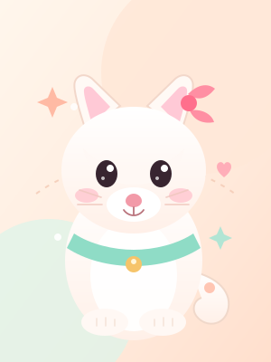
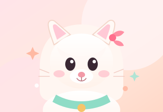
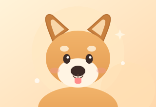
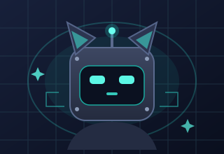
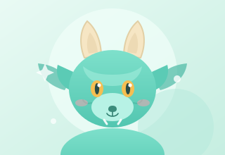
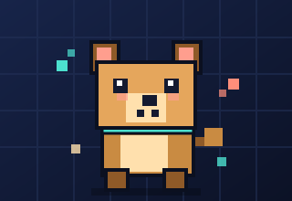

发布你的模型包，让角色持续生长
上传模型包、维护多个版本、跟踪审核状态。每一次更新都会同步到客户端，让使用者第一时间拿到新内容。
- 版本管理
- 审核状态流转
- 我的模型
- 下载统计
KfuPet Hub 是 KfuPet 的社区与模型包平台。在这里交流角色制作、发布你的模型包； Windows 客户端可直接从站内获取在线资源，Android 版正在筹备中。

Why KfuPet Hub
创作、分享、获取、反馈都在同一个地方完成，客户端与站点账号互通。
上传模型包、维护多个版本、跟踪审核状态。每一次更新都会同步到客户端，让使用者第一时间拿到新内容。
发帖、评论、点赞、分类与标签，讨论角色设定与制作技巧。
模型包审核机制与站点举报入口，让社区长期保持干净可用。
Windows 客户端直接读取站内资源；账号在社区与模型板块之间互通。
Model Library
来自社区的创作者作品，覆盖桌面常驻、互动动作与不同美术风格。

v1.2.0蓬松白猫系桌宠，带呼吸循环、伸懒腰与鼠标跟随动作，适合长时间陪伴。

v1.0.4橘色柴犬桌宠，包含摇尾巴、被点击时的惊喜表情与午睡待机动作。

v2.1.0赛博朋克风格角色，发光描边与动态粒子背景，适配深色桌面主题。

v1.3.2幼龙造型桌宠，喷火小动画与翅膀扇动循环，支持拖拽投喂互动。
半透明幽灵角色，飘浮轨迹缓慢安静，适合作为不打扰的桌面陪伴。

v1.1.0像素风角色，四向行走与坐下休息帧动画，兼容低配设备与高缩放比例。
Community
角色制作心得、使用技巧与问题反馈，都在这里沉淀。
从图层拆分、待机循环到鼠标跟随的触发逻辑，把第一次做角色的完整流程整理了一遍。
附带一份配置说明，切换分辨率后也不需要重新摆放位置。
把 15MB 的包压到 6MB 以内，同时保持动作品质，记录了取舍过程。
Download
下载 Windows 客户端，登录后即可浏览并安装社区里的模型包。Android 版本正在筹备中，敬请期待。
FAQ
KfuPet Hub 是配套的社区与模型包平台。你可以在这里交流、发布和管理模型包，客户端则负责在桌面上运行角色，并直接读取站内的在线资源。
需要。模型包提交后会进入审核流程，你可以在「我的模型」中查看状态。审核通过后，其他用户即可在客户端与站点中获取。
通用。注册一次即可在社区发帖、上传模型包和管理个人资料，无需重复注册。
帖子和模型包都提供举报入口，选择对应的举报原因提交即可。管理员会在后台处理，并同步处理结果。